University of Michigan — Ann Arbor, MI
- Intended MSE in Electrical and Computer Engineering — Expected Apr. 2029
- BSE in Computer Engineering — Apr. 2027
I interned on TI's LOGIC team, which develops standard CMOS logic gates and TI Programmable Logic Devices (TPLDs). I wrote and validated IG-XL test scripts on J750HD and ETS-88 automated test equipment, characterized packaged devices and cleanroom wafers, and analyzed yield and split-lot performance across temperatures.
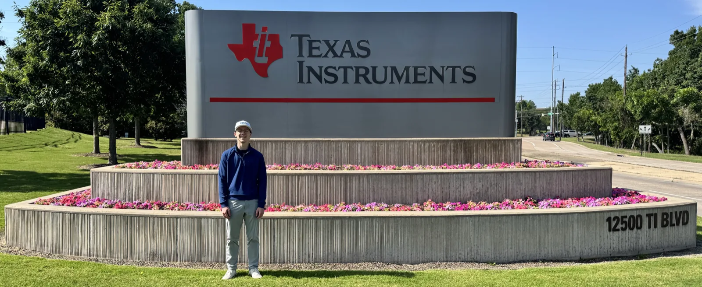
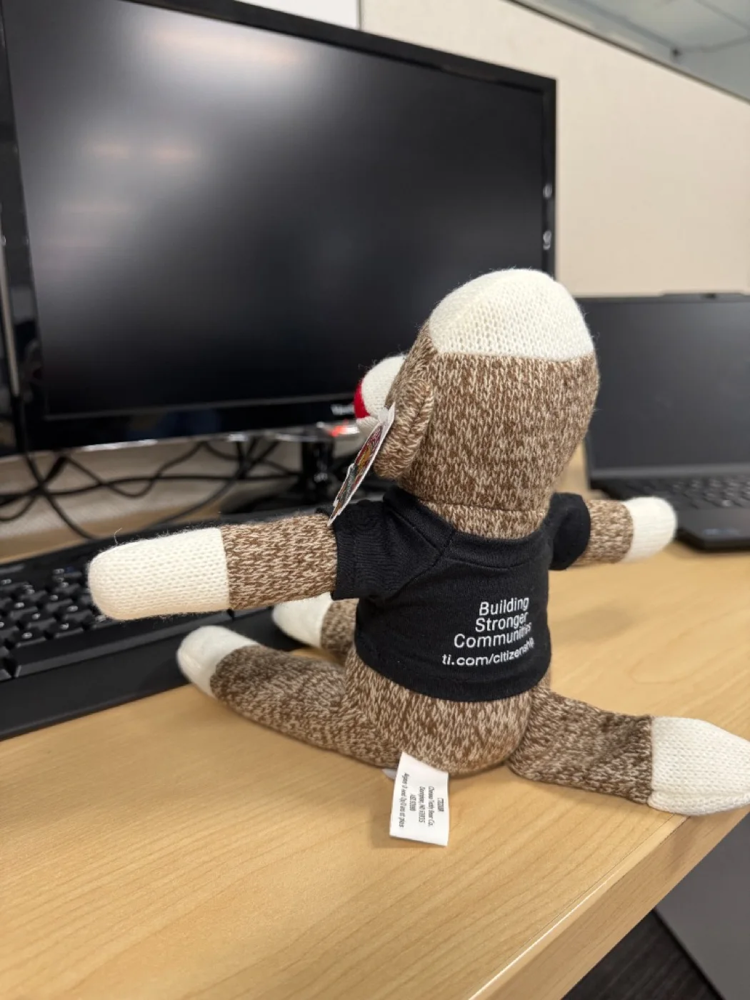
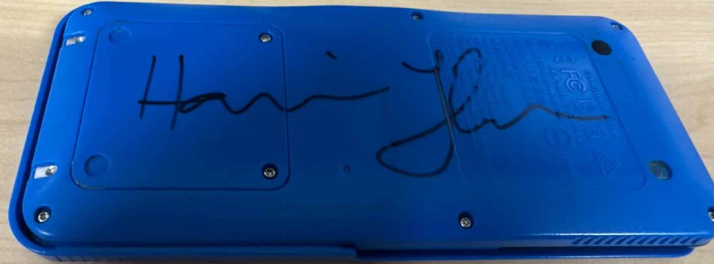
I run a weekly lab section and hold office hours for EECS 270, helping students with digital logic and Verilog/FPGA debugging. Outside of lab, I built an attendance tracker used across all 9 lab sections and have spent two semesters writing interactive PrairieLearn practice problems.
Our team of six is designing a 16-bit pipelined RISC processor and a custom 4x4 island-style FPGA in Cadence Virtuoso using the TSMC 65nm PDK. They are planned as two separate chips with their own IO pads, with the processor controlling the FPGA through custom instructions.
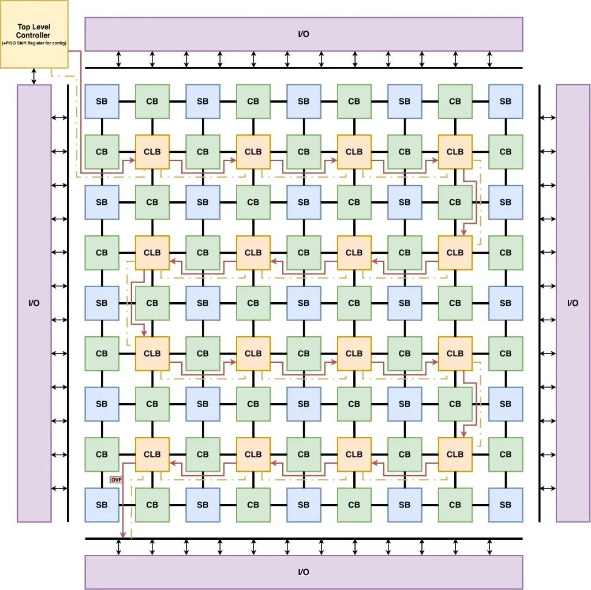
In EECS 423, I worked in Michigan's Lurie Nanofabrication Facility (LNF) to take 100 mm silicon test wafers through the core front-end and back-end steps of a CMOS process, from furnace cleans and photolithography through etching and aluminum metallization.
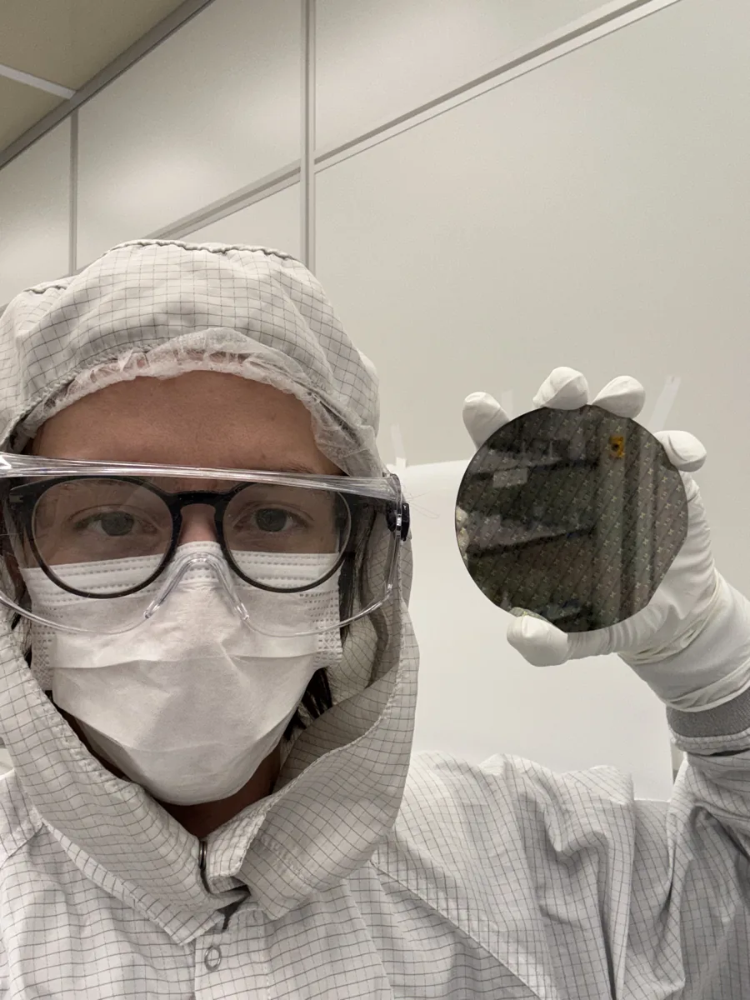
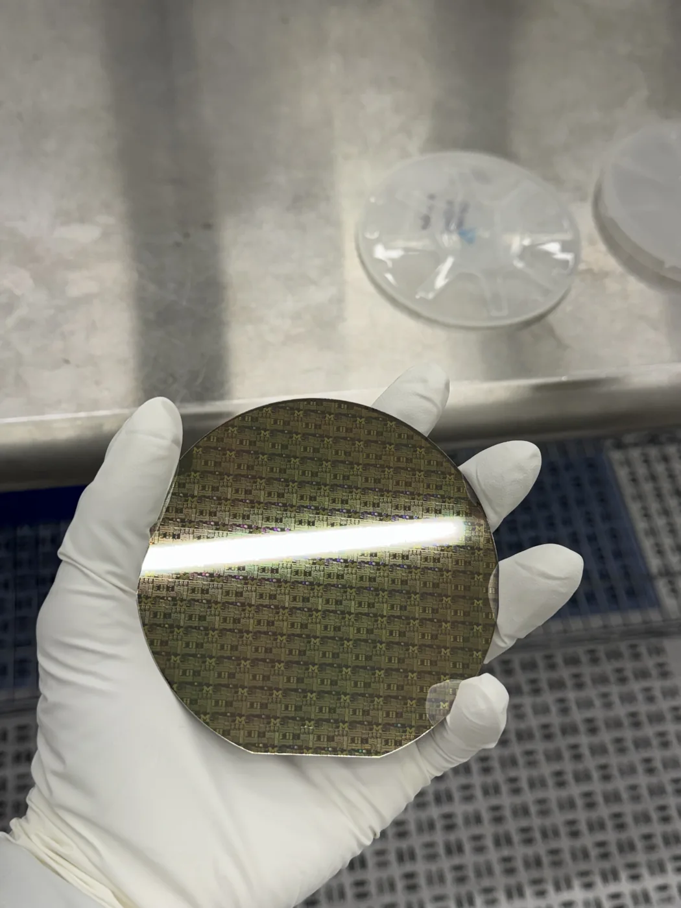
Our four-person team built a spinning persistence-of-vision (POV) 3D volumetric hologram display with a handheld wireless controller that tilts and updates the hologram in real time. I designed the 3D-printed rotor frame in Onshape to hold up at 400+ RPM, wrote the variable-speed brushless motor control firmware in C on STM32, and debugged the break-beam PID loop along with SPI and Bluetooth on the LED matrix PCB.
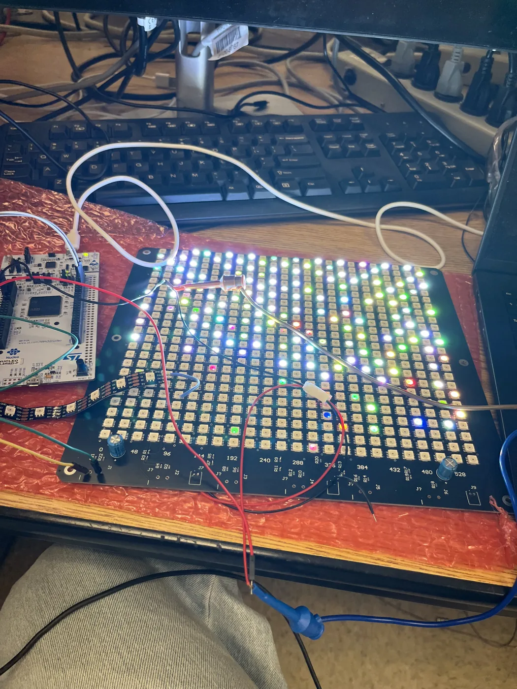
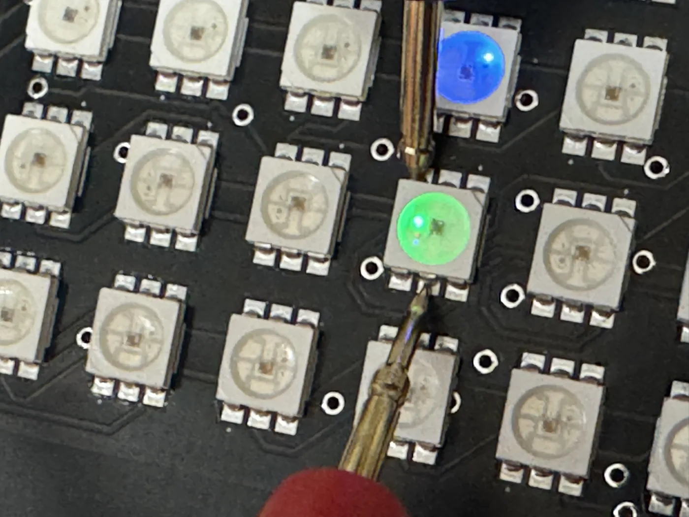
With two teammates, I designed an 8-bit dual-mode ripple-carry adder and accumulator in 60nm static CMOS using Cadence Virtuoso at 1.2 V, targeting 1.5 GHz operation. I focused on the synchronous reset scheme, using a single 145 nm pull-down NMOS in the master D-latch clock feedback path as a reset-controlled clock-gating element to avoid per-bit muxes and add zero critical-path delay, and drew the transistor-level schematics and critical-path figures for the report.
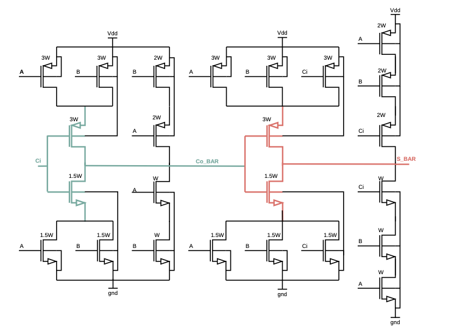
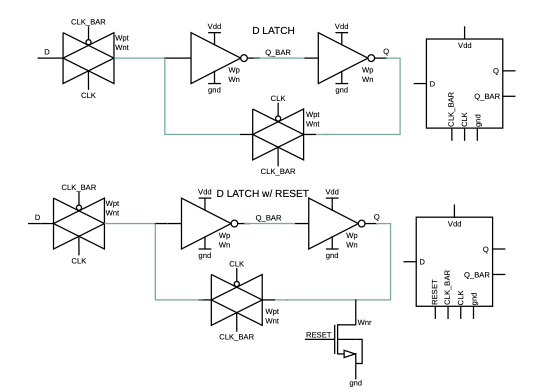
With a lab partner, I designed a three-stage 2N3904 NPN BJT amplifier on ±5 V rails by hand, simulated it in Cadence Virtuoso with an extracted SPICE model, and built and debugged it on a breadboard. The final circuit hit every spec on the bench, including 843 V/V midband gain and a 94.3 Hz to 26.5 kHz passband.
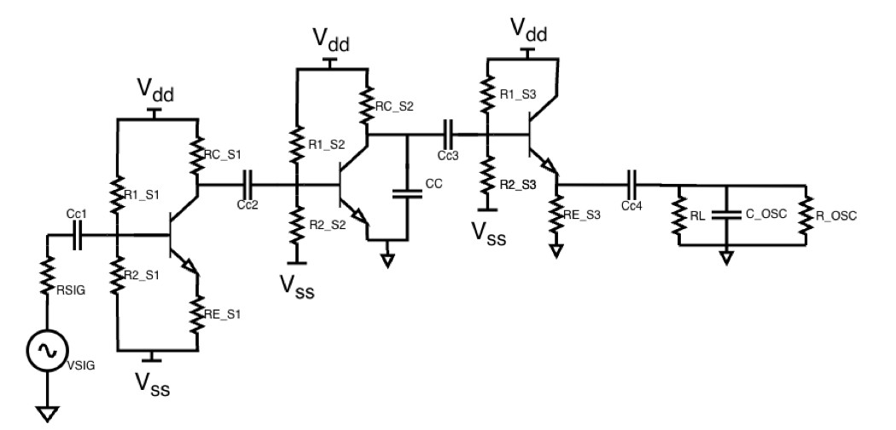
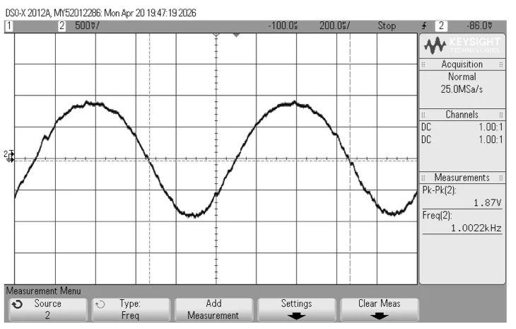
With a partner, I built and programmed a ballbot that balances and steers on a basketball using three omni-wheels and a Bluetooth PS4 controller. I wrote the 200 Hz upright balance and steering PID controllers, kinematics, odometry, and MATLAB sensor validation, and helped design the 3D-printed motor mounts and laser-cut base plate in Onshape.
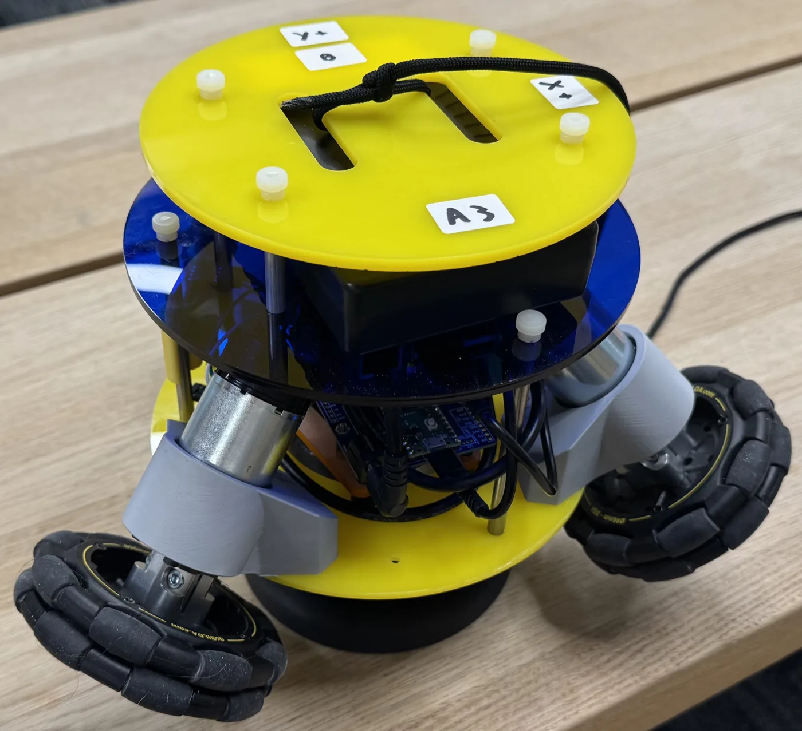
Our four-person team redesigned Michigan's two-wheeled MBot platform into an eight-servo quadruped running an open-loop MicroPython gait on a Raspberry Pi and RP Pico. I helped design the custom EasyEDA power and PWM board, run the power and cost analysis, iterate on the 3D-printed legs, and test a working hybrid prototype.
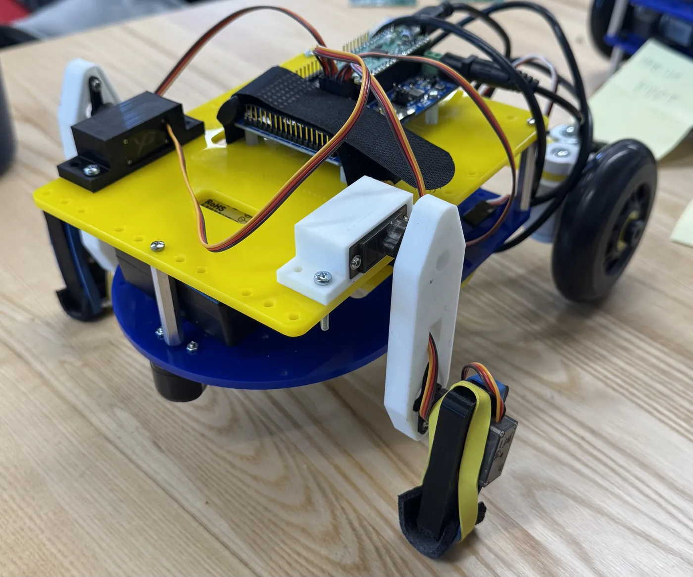
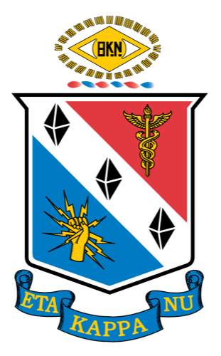
I joined Michigan's Beta Epsilon Chapter of IEEE-HKN in the fall of my sophomore year and have been on the officer board ever since, moving from Service Projects Officer to two terms as President and now Advisor. Over that time, I helped double chapter membership, revenue, and events year-over-year and worked with IEEE-HKN Nationals to host the 2025 HKN Student Leadership Conference.
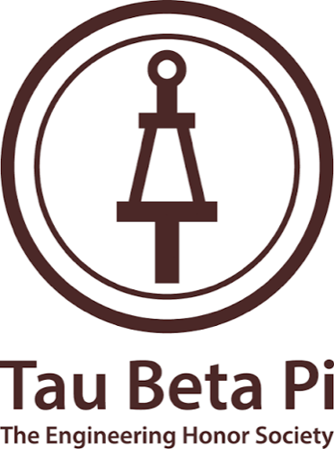
I joined the Michigan Gamma chapter of Tau Beta Pi in fall 2024 and have served on the officer board since, moving from Service Coordinator to External Vice President and now Professional Development Officer.
Tau Beta Pi and the Society of Women Engineers team up each fall to host the Fall Engineering Career Fair, bringing over 200 companies and 4,000 students to Michigan. I worked on two consecutive fairs, first as Registration Committee Chair and then as one of four student Directors.
On the side, I'm building Ben Eater's 8-bit breadboard computer from scratch out of 74LS-series logic ICs to get hands-on with how a CPU works down at the wire and gate level. So far I've wired up the 555-timer clock module, registers, and ALU on breadboards.
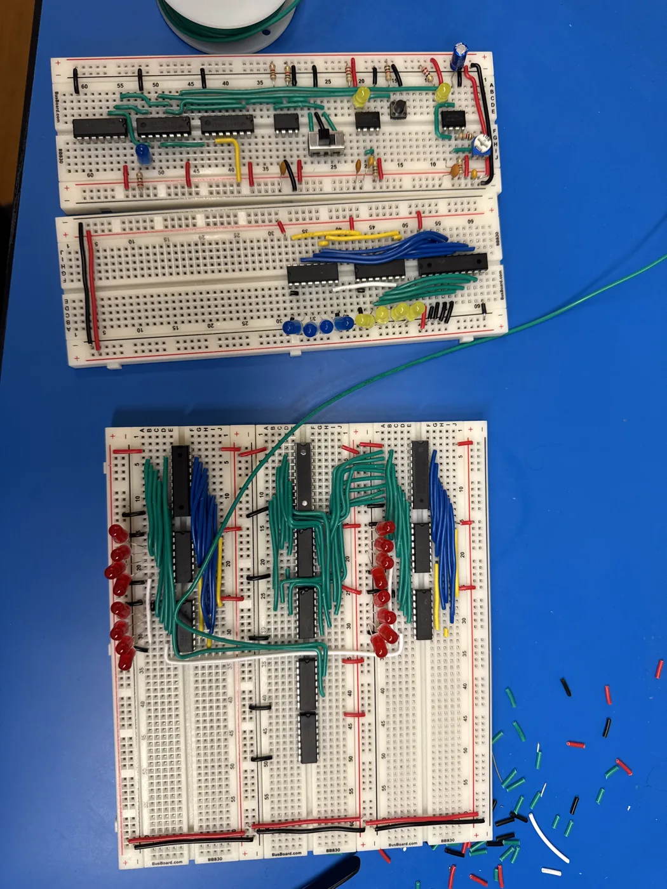
Feel free to send a message using the form below, or connect with me on LinkedIn.